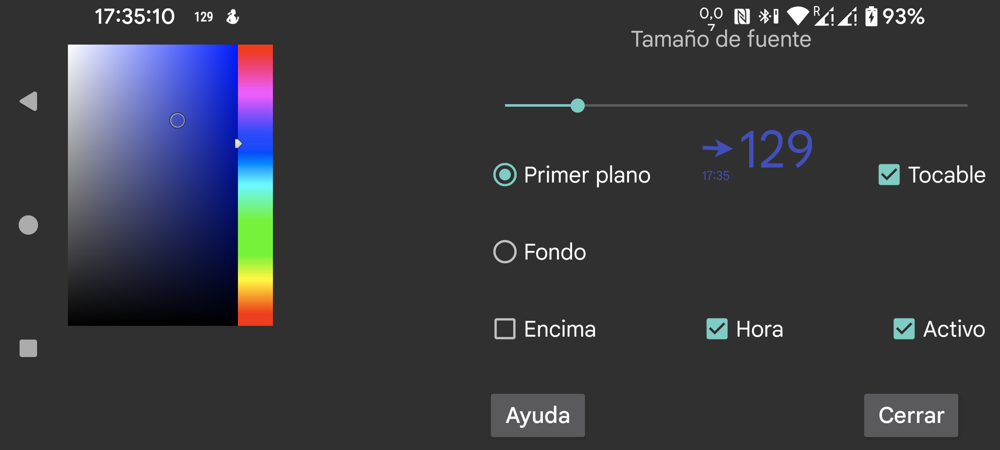

be de es fr nl pl ru tr uk zh en
Aquí puedes ajustar el tamaño de letra y los colores de primer plano y fondo de la glucosa flotante. También puedes poner el fondo en Transparente, con lo que quedará invisible.
Tocable: cuando está activado, puedes mover la glucosa flotante con el dedo y hacerla pequeña manteniéndola pulsada sin moverla. Cuando no está activado, las pulsaciones pasan a la ventana situada debajo, para que puedas usar la app que queda bajo la glucosa flotante. También puedes volverla intocable tocándola dos veces.
Encima: muestra la glucosa flotante también sobre Juggluco.
Hora: muestra la marca de tiempo del valor de glucosa.
Activo: la activa o desactiva.
Después de escribir el tamaño de fuente, debes pulsar la tecla Enter, Hecho o ✓ del teclado en pantalla.
Puedes activar o desactivar la glucosa flotante con menú central izquierdo → Flotante.
Puedes cambiar a Juggluco tocando el lado de la flecha de la glucosa flotante. Si pulsas dos veces el lado del valor de glucosa, la glucosa flotante pasa a ser intocable. Si mantienes pulsado el valor de glucosa, solo se mostrará un valor pequeño para que puedas interactuar con lo que queda debajo. Al tocar esa pequeña pantalla se vuelve a ampliar. Si arrastras mientras tocas el lado del valor, mueves la glucosa flotante.
Para mostrarse encima de otras apps, Juggluco necesita un permiso especial. En Wear OS y también en Android Automotive debes concederlo con adb:
adb shell pm grant tk.glucodata android.permission.SYSTEM_ALERT_WINDOW
En algunos relojes, por ejemplo TicWatch Pro, también puedes activarlo en Ajustes de Android/Wear OS → Apps y notificaciones → Información de la app → Juggluco → Avanzado → Mostrar sobre otras apps.